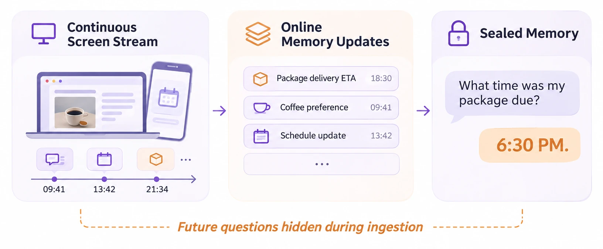
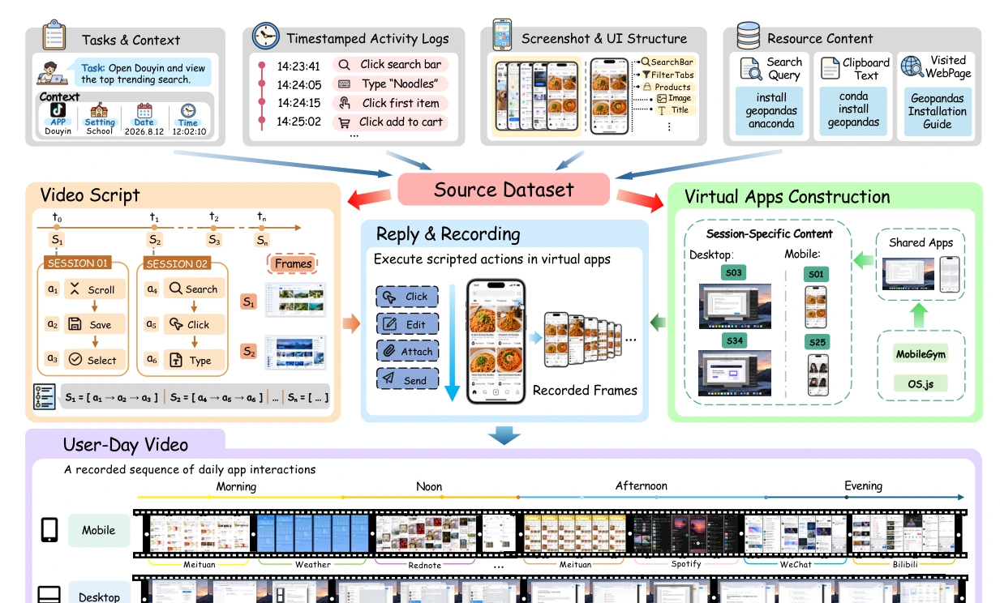
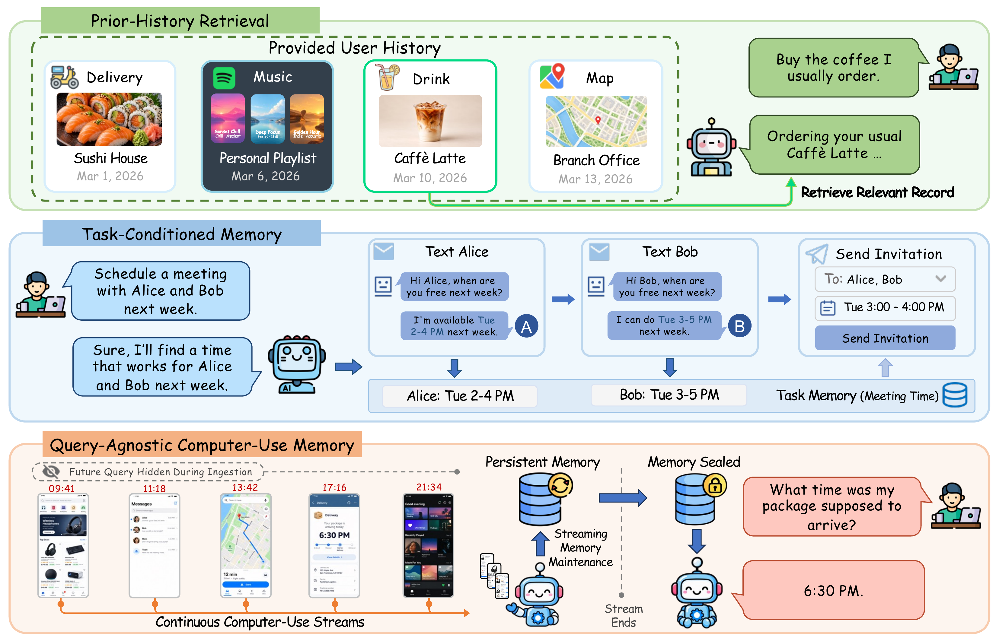

Facts & States
Retain factual information or an application/device state observed at a particular time.
ScreenMem evaluates how systems construct and update persistent memory before future information needs are known. Here, proactive refers to memory maintenance, rather than intervention in user activities.
Systems ingest observations causally, then answer questions solely from the resulting sealed memory.

Real-world interaction traces are replayed in reconstructed applications to produce reproducible PC and mobile user-day streams, preserving behavioral structure without releasing the original users’ screen recordings.

PC interactions are derived from RLKWiC; mobile interactions are derived from FingerTip 20K.
Executable virtual applications recreate the interaction semantics and visually observable information required by each trace.
Recorded interaction episodes are composed into user-day streams, retaining inactive intervals between interactions.
484 human-verified questions probe information retained from visually observable evidence: 312 from PC and 172 from mobile. 41.3% require retaining information for at least eight hours.
Retain factual information or an application/device state observed at a particular time.
Track changing valid states and distinguish earlier states from subsequent updates.
Preserve user activities and short-lived information, such as notifications or temporary interface events.
Aggregate evidence across temporally separated interactions to recover recurring behaviors, routines, or preferences.
Evaluation questions remain hidden throughout ingestion; all questions for a user day are answered from the same sealed memory.
Observations arrive chronologically. Questions stay hidden.
Memory is sealed after the final observation and cannot be updated using evaluation questions.
Answer solely from sealed memory, without access to the original stream or evidence annotations.
Prior-history retrieval selects from an available history after a request is known; task-conditioned memory supports an explicit task. ScreenMem evaluates query-agnostic memory maintenance: deciding what to preserve during causal ingestion before future information needs are known.
